Fundado en el año 1992, nuestro Colegio ha sido diseñado y construido en un entorno pensado para fomentar el acercamiento con la naturaleza y con la visión de iniciar un colegio bilingüe de alto nivel académico, pero esencialmente familiar y personalizado, atendiendo todas las necesidades de bienestar del alumno.
Nuestro querido símbolo, el árbol de Ginkgo Biloba. Este árbol, único y resistente, nos recuerda nuestra Misión y Visión como Colegio. Sus cinco hojas, con forma de abanico, nos enseñan sobre los pilares que sostienen nuestra labor diaria:
EL RESPETO
EL COMPROMISO Y LA LEALTAD
LA INTEGRIDAD Y LA HONESTIDAD
LA RESPONSABILIDAD Y LA FORTALEZA
LA SOLIDARIDAD
Estos valores son los cimientos sobre los que construimos cada día la educación de nuestros alumnos y son
también el motor que impulsa cada acción y decisión que tomamos como institución.
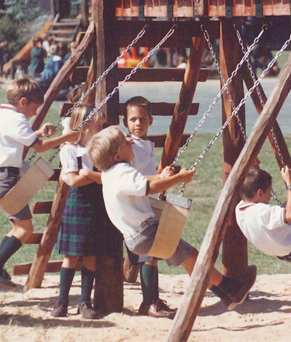
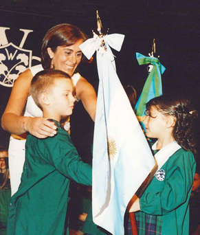
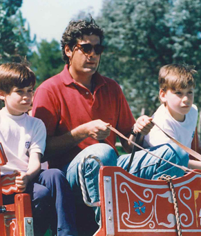
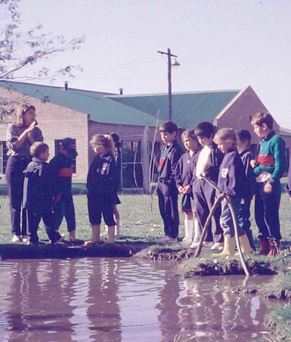
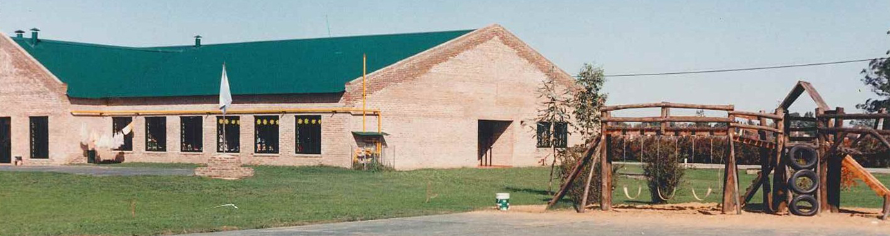
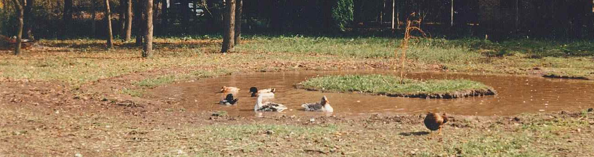
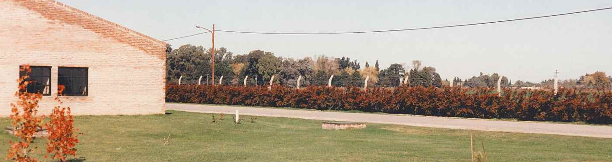
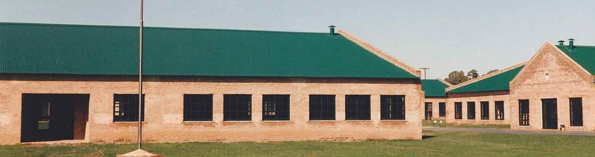
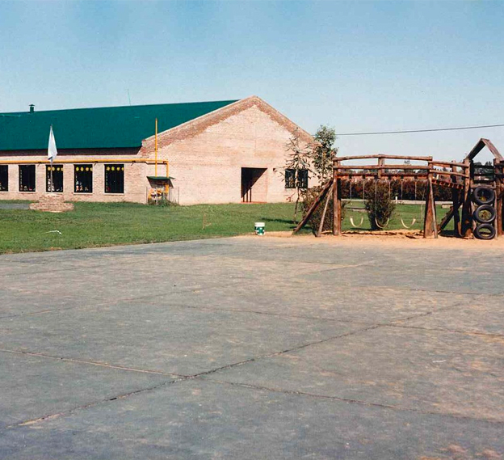
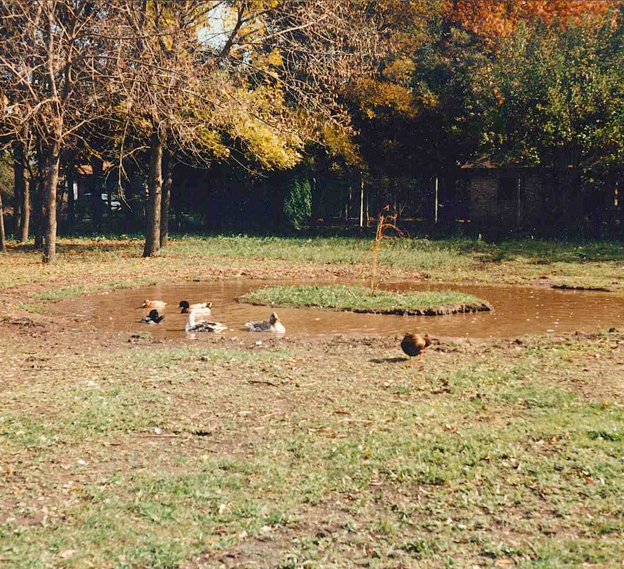
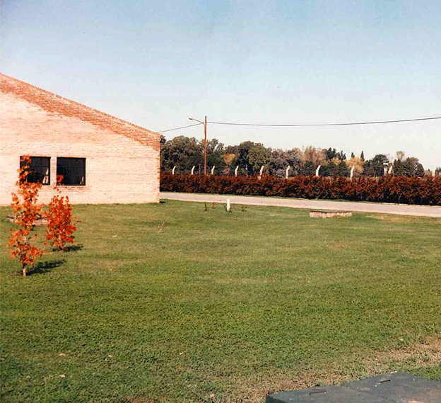
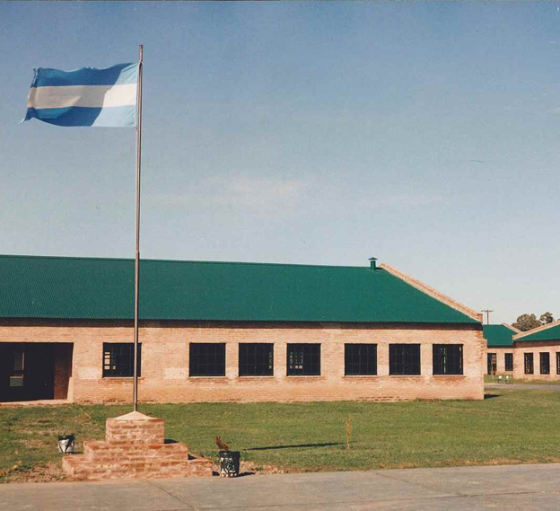
40.000 m²
DE CAMPUS
30 años
ENSEÑANDO Y ACOMPAÑANDO
+800
EGRESADOS
INFRAESTRUCTURA
Los distintos sectores se han distribuido dentro de las 4 hectáreas del campus buscando que el asentamiento respetara el plácido entorno natural, evitando la centralización, pero al mismo tiempo, contemplando en cada área las necesidades requeridas para su función específica.
El colegio está construido en una sola planta, cada nivel tiene su propio edificio con entrada independiente conectados en red y con acceso a Internet (WIFI). Además, cuenta con un edificio de talleres o workshops de uso compartido: laboratorio, sala de música, arte, scenery club, computación, smartboard, ideas lab y auditorio.
Las aulas están climatizadas por medio de aire acondicionado individual y calefacción central. Tiene un amplio comedor, una huerta en la cual participan los alumnos, un patio semi-cubierto destinado a actividades varias y cómodas áreas de amplios espacios verdes para los períodos de recreación.
El campo de deportes está ubicado dentro del perímetro escolar promoviendo así la práctica deportiva sin la necesidad del traslado de los alumnos. El predio tiene un excelente acceso, asfalto en perfecto estado, estacionamiento interno, y seguridad las 24 hs.
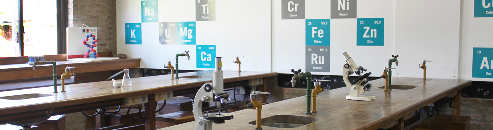
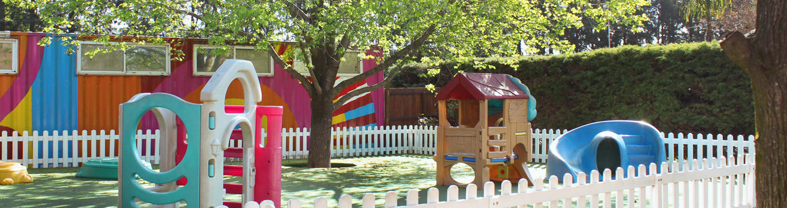
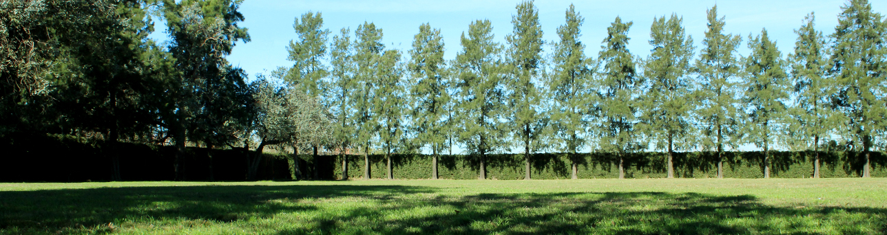
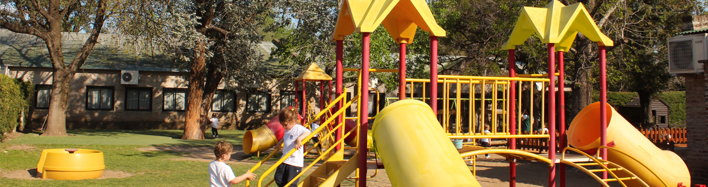
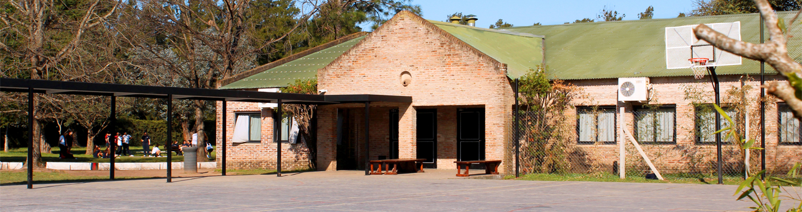
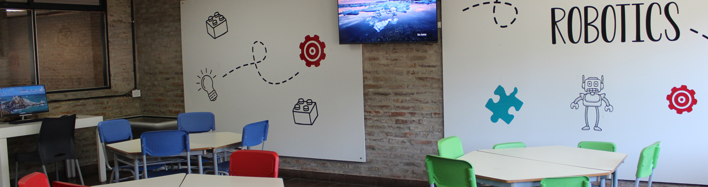
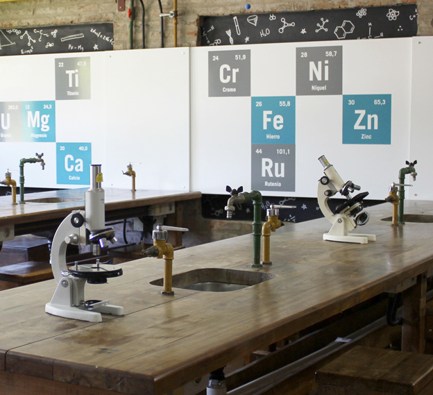
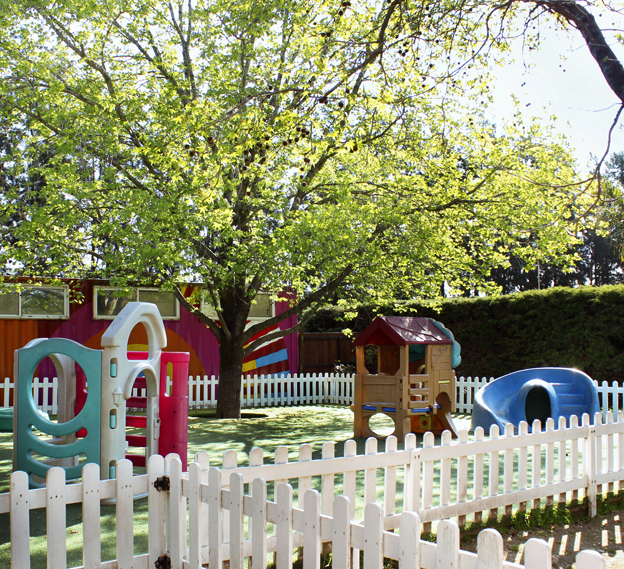
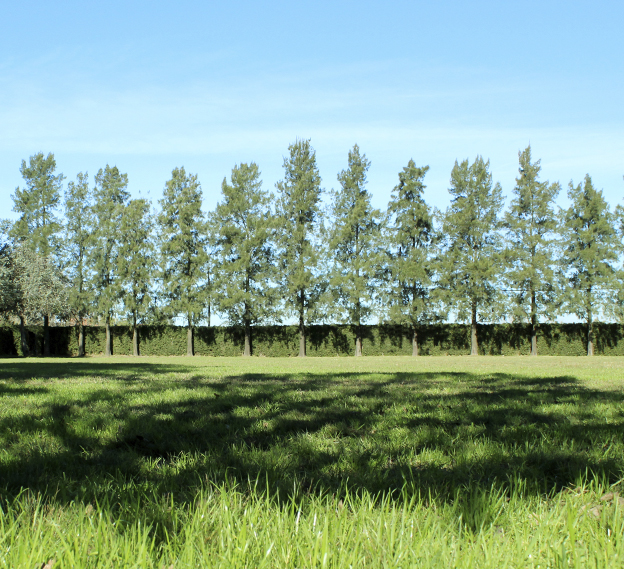
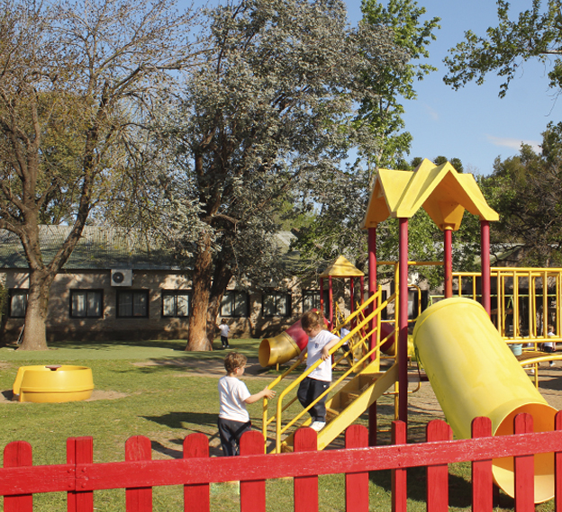
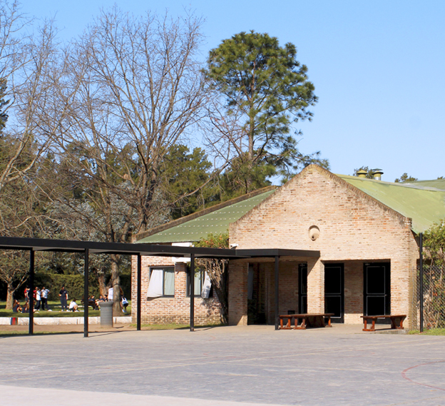
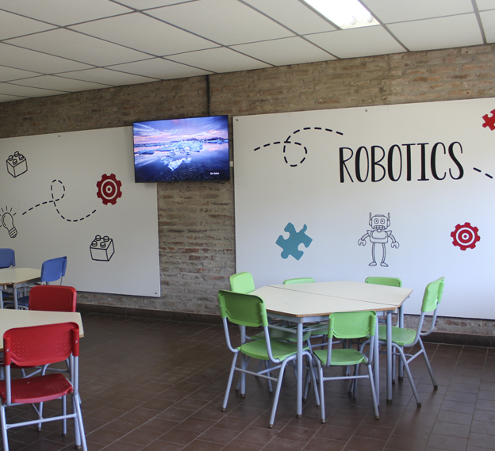
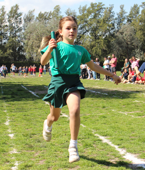
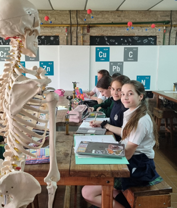
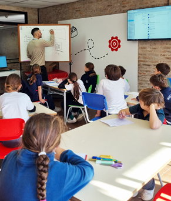
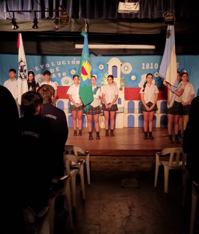
Misión
Nuestra principal misión es brindarles a nuestros alumnos una educación integral y, principalmente, bienestar dentro de un ámbito seguro, respetuoso e inclusivo, que les dé la posibilidad de construir aprendizajes para toda la vida.
Visión
Wellspring es una Institución de aprendizaje privada, bilingüe, mixta. Buscamos desarrollar fuertes valores éticos para permitir que nuestros alumnos se conviertan en ciudadanos íntegros, útiles y exitosos. En Wellspring deseamos que los alumnos sean el centro de su propio proceso de aprendizaje, en un entorno en donde se sientan queridos, respetados y motivados para poder desarrollar todo su potencial. Nuestro entorno fomenta el desarrollo individual, el pensamiento independiente, el espíritu deportivo y trabajamos por una interacción extensa y cercana con y entre la Comunidad.
Valores
Promover el respeto, la solidaridad y la honestidad en la convivencia diaria. Actuar con responsabilidad, compromiso y coraje, defendiendo siempre la verdad y la justicia. Fomentar el liderazgo, la empatía y el cuidado del entorno mediante el ejemplo.
PROGRAMAS INTERNACIONALES
Preparamos a nuestro alumnos para rendir exámenes internacionales desde el Nivel Primario hasta el final del Nivel Secundario.
En Primaria, desde 2° EP los alumnos rinden exámenes de Trinity College London y Cambridge University.
En secundaria, se presentan a niveles más avanzados: PET, FCE, CAE, IGCSE, y A/AS Levels.
Estas certificaciones fortalecen su trayectoria escolar, mejoran su desempeño lingüístico y los preparan para futuros desafíos académicos y profesionales.